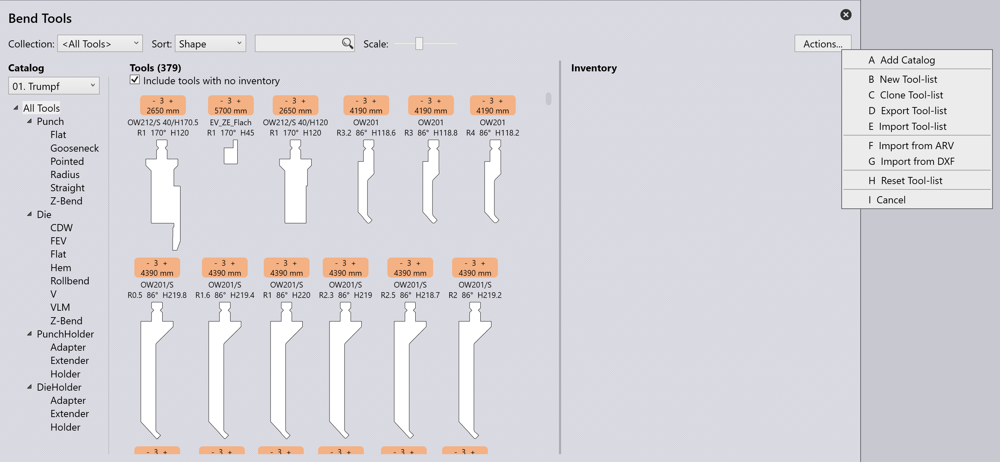

Configurar ferramentas
Todos os cálculos de adaptação de geometria necessária, bem como nesting e tecnologia de dobra do TruSmartCAM, são baseados nos módulos de tecnologia de última geração TecZone Fold e TecZone Laser. Para obter o mais alto nível de precisão, todos os detalhes de suas máquinas físicas precisam ser configurados.
Especialmente na Tecnologia de Dobra, todas as ferramentas existentes precisam ser conhecidas pelo sistema offline. Todas as Ferramentas para as máquinas serão configuradas no diálogo Factory do TruSmartCAM, mas é análogo ao diálogo dos módulos de tecnologia TecZone Fold e TecZone Laser.
| Consulte os manuais do TecZone para configurar seu sistema. |

Opções de catálogo
Clicar no menu suspenso Catalog listará primeiramente quaisquer catálogos de ferramentas que já estão ativos, juntamente com uma listagem para quaisquer ferramentas personalizadas e a capacidade de instalar outro catálogo clicando no botão Adicionar.

Clicar em qualquer catálogo na lista disponível o instalará.
Coleção
O Inventário de Ferramentas de Dobra também suporta a opção de criar coleção(ões) personalizada(s) de ferramentas que podem ser para um cliente específico ou entre catálogos quando múltiplos catálogos estão em uso.
| Consulte o manual do TecZone Fold para mais informações |